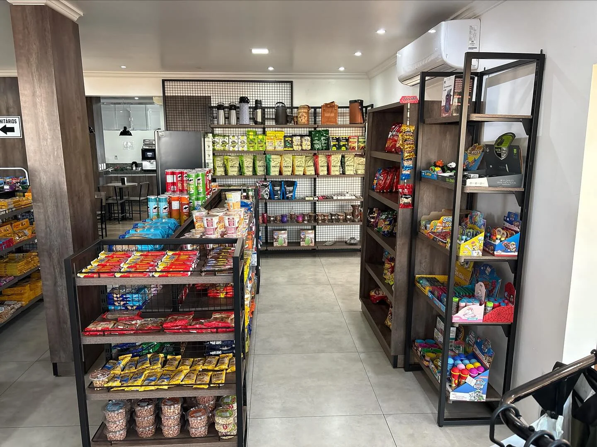
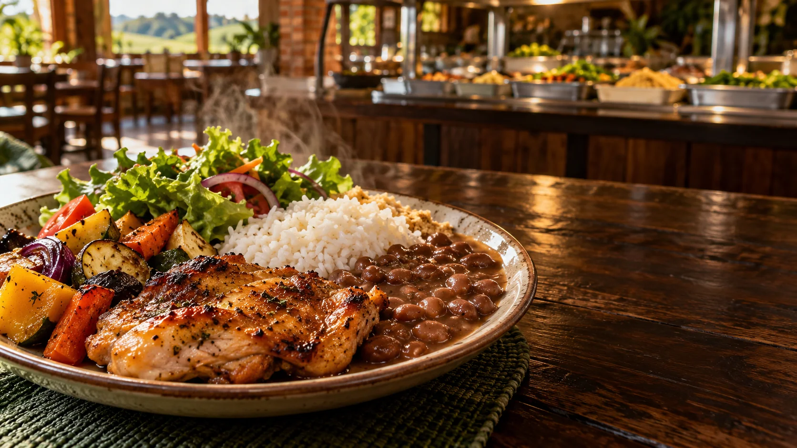
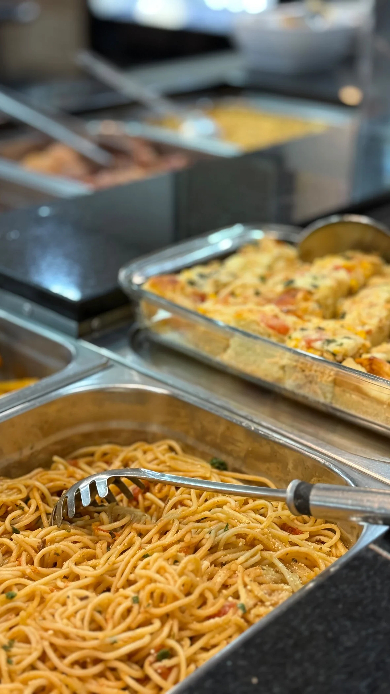
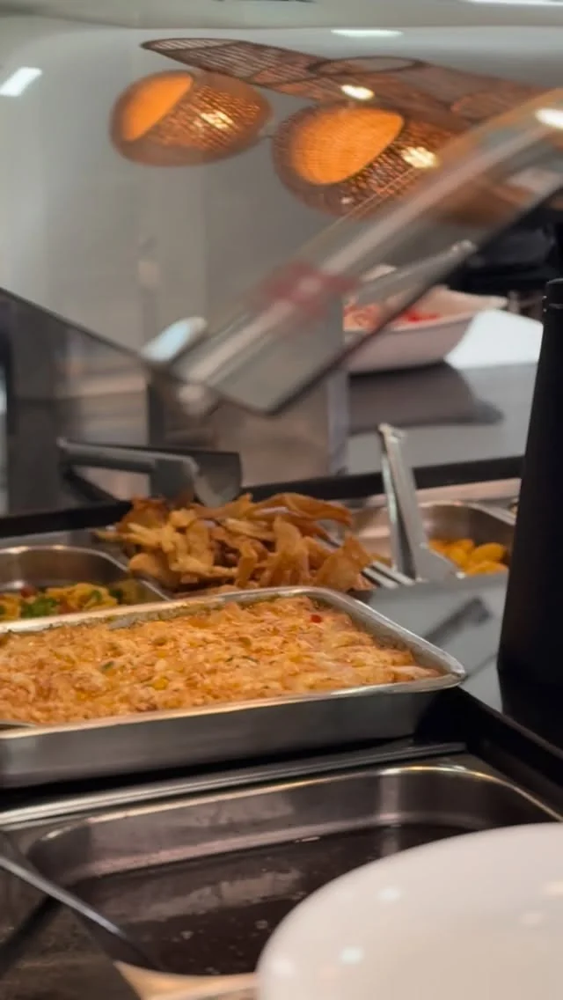

Sua parada
completa na
BR-277.
Um lugar para seguir bem: abastecimento, conveniência e o sabor de uma boa comida caseira no mesmo destino.
O caminho fica melhor
quando a pausa vale a pena.
Na BR-277, o Auto Posto Virmond e o Restaurante Cantagalo se encontram para cuidar de cada parte da sua parada — do tanque cheio ao prato servido com carinho.
Energia para
o carro. Sabor
para a viagem.
Mais do que
abastecer.
Combustível de qualidade Petrobras, conveniência completa e cuidados para o seu veículo. Uma parada pensada para você retomar a estrada com tranquilidade.



Sente-se.
Aproveite.
O sabor acolhedor da comida caseira em um restaurante anexo ao posto. Para quem mora na região ou está de passagem, o Cantagalo transforma o almoço em um bom motivo para parar.
Comida caseira na BR-277
Pequenos momentos.
Uma viagem melhor.

No caminho
certo para você.
Estamos na BR-277, em Virmond, no Paraná. Faça uma pausa, abasteça e descubra o Restaurante Cantagalo no mesmo local.
Virmond, Paraná